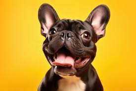
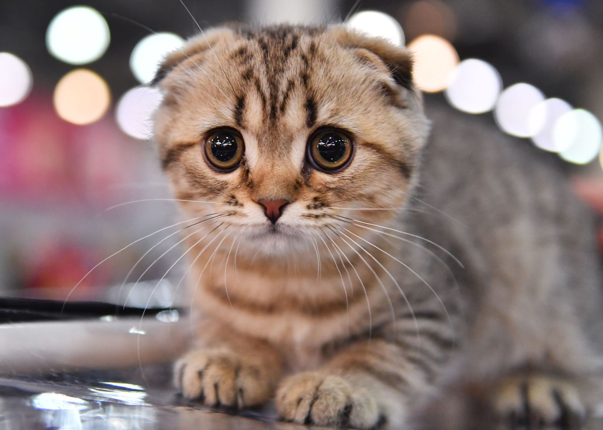
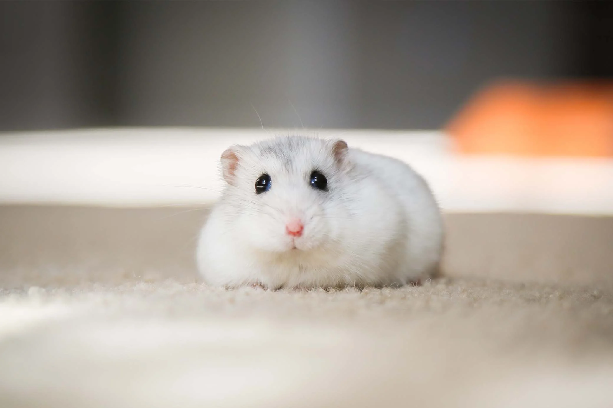
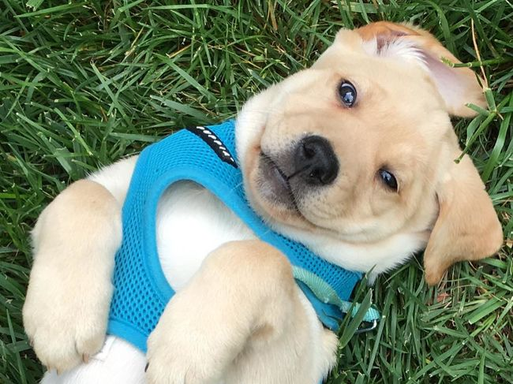
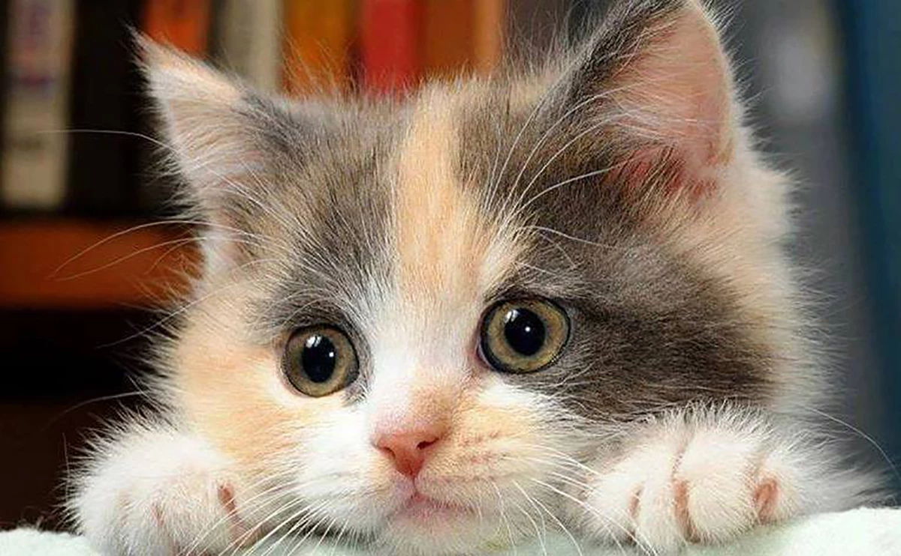
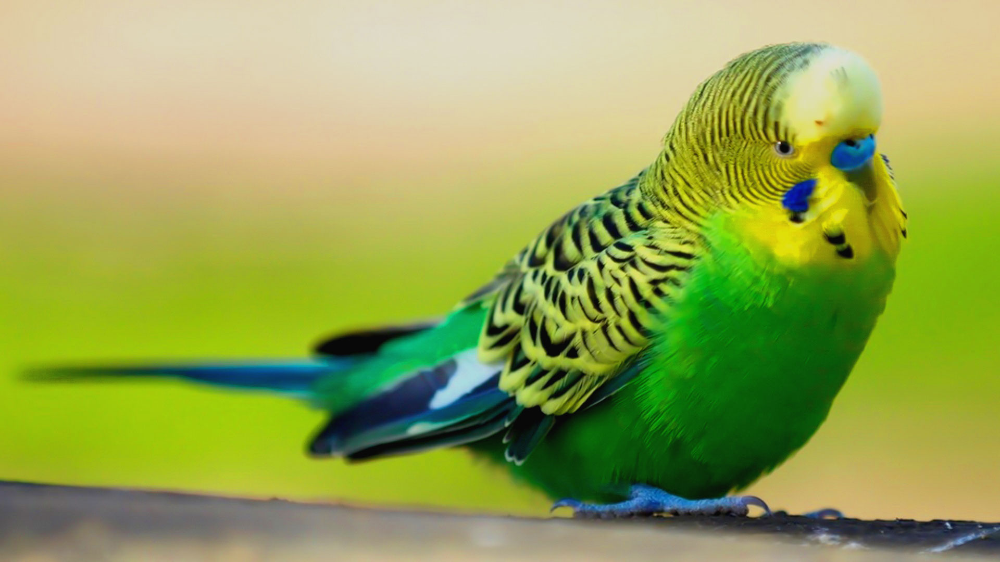

Bine ai venit la cel mai bun loc pentru a adopta un animal!
Verifică lista noastră de animale de companie drăguțe!

Statisticile noastre
4000
Animale salvate
2500
Animale care și-au găsit o familie
Animale disponibile pentru adopție

Câine - Rex
Vârstă: 2 ani

Pisică - Luna
Vârstă: 1 an
Iepure - Bubbles
Vârstă: 6 luni

Hamster - Cici
Vârstă: 3 luni
Avantajele adopției animalelor
1. Oferi o a doua șansă unui animal abandonat.
2. Adopția reduce numărul de animale fără adăpost.
3. Animalele adoptate sunt de obicei vaccinate și sterilizate.
4. Adoptând un animal, îți faci un prieten pentru viață.
5. Vezi impactul pozitiv pe care îl ai asupra comunității.
Beneficii ale animalelor de companie
- Reduc stresul și anxietatea: Prin simpla mângâiere a unui câine sau a unei pisici, în organism se produc modificări fizice, prin creșterea nivelului de serotonină, numită și „hormonul fericirii”, dar și prin scăderea nivelului de cortizol, numit și „hormonul stresului”.
- Reduc riscul aparițiilor bolilor cardiovasculare: Studiile au arătat că persoanele care dețin animale de companie prezintă un nivel mai scăzut al tensiunii arteriale și al trigliceridelor, ceea ce oferă un risc mai scăzut al atacurilor de cord.
- Reduc riscul de alergii: Studiile au arătat că animalele de companie pot scădea riscul de apariție al alergiilor prin expunerea la potențialii alergeni de la o vârstă fragedă.
- Oferă suport emoțional: Îmbrățișarea cu prietenul blănos poate fi tot ceea ce ai nevoie după o zi dificilă.
- Încurajează socializarea: Proprietarii de câini tind să fie mai sociabili și pot stabili relații mult mai ușor.
- Încurajează mișcarea: Un câine necesită plimbări regulate, ceea ce te încurajează și pe tine să faci mișcare.
Animale adoptate în ultima săptămână

Max
Adoptat: 22 Octombrie

Bella
Adoptată: 22 Octombrie

Fluffy
Adoptat: 25 Octombrie

Nibbles
Adoptat: 26 Octombrie
Informații despre adopție
Pentru a adopta un animal, te rugăm să urmezi pașii de mai jos:
1.
Completează formularul de adopție.
2.
Participă la o întâlnire cu animalul dorit.
3.
Semnează contractul de adopție.
Contactează-ne la: adoptii@adapost.ro